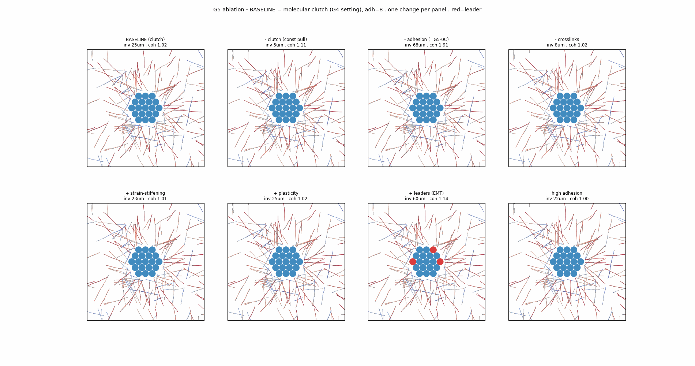
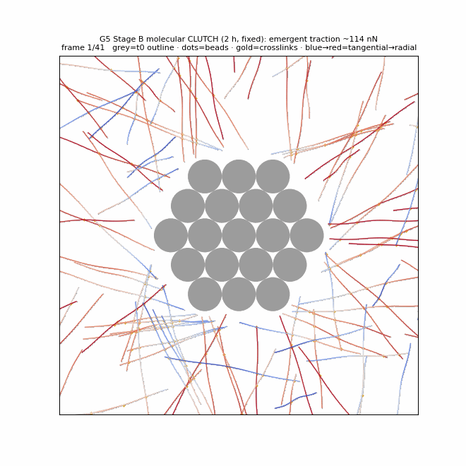
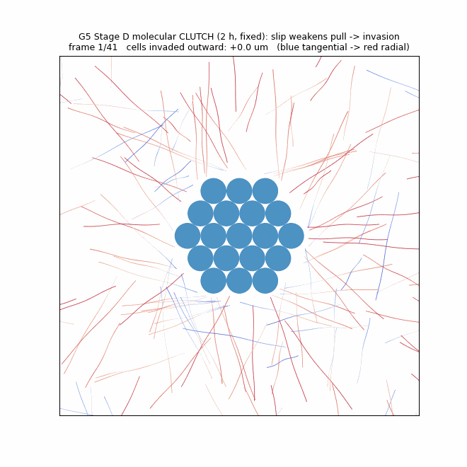
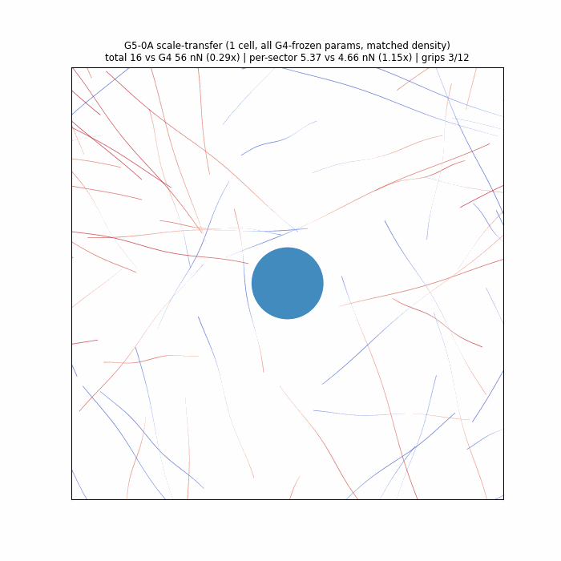
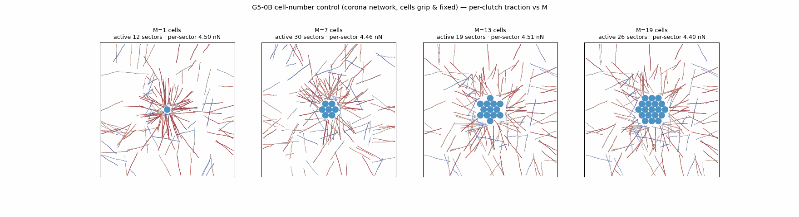
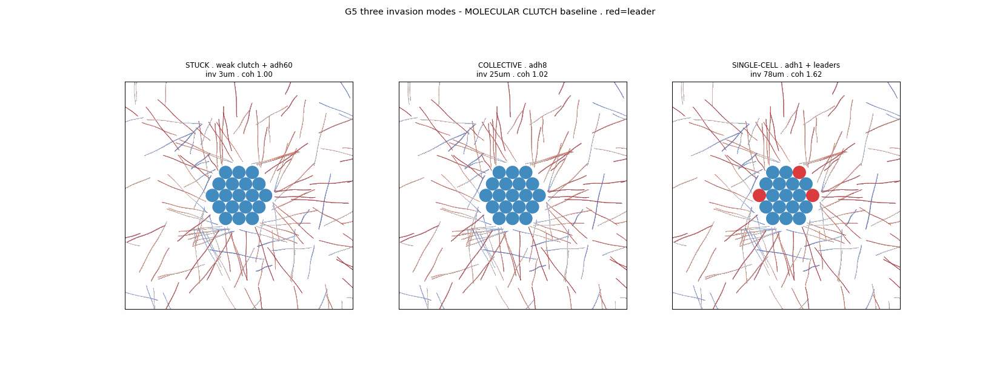
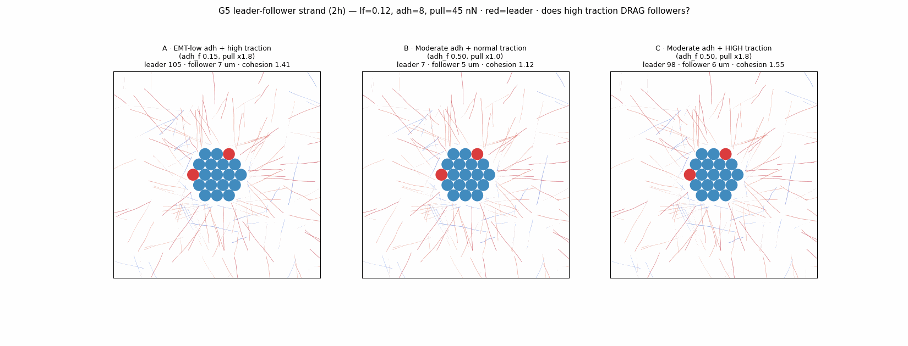
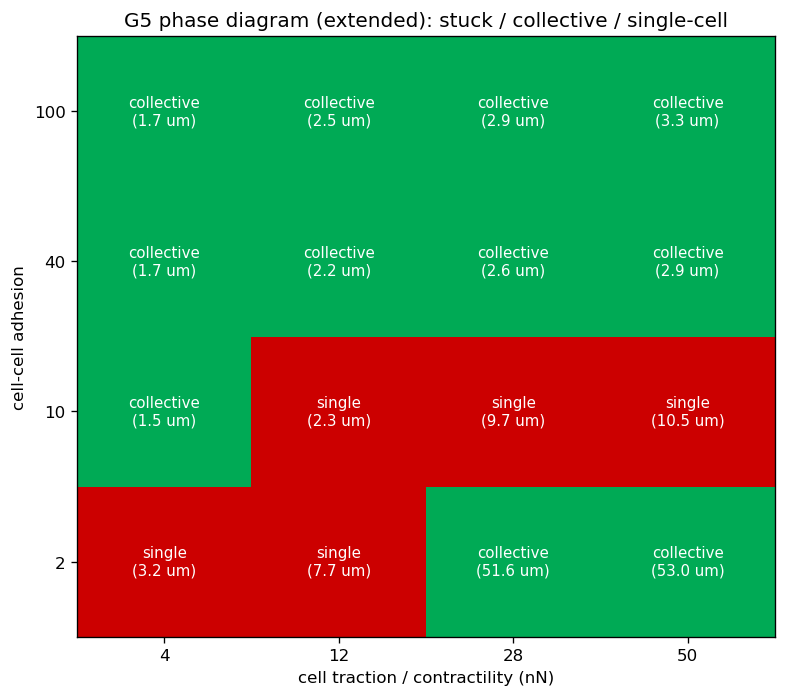
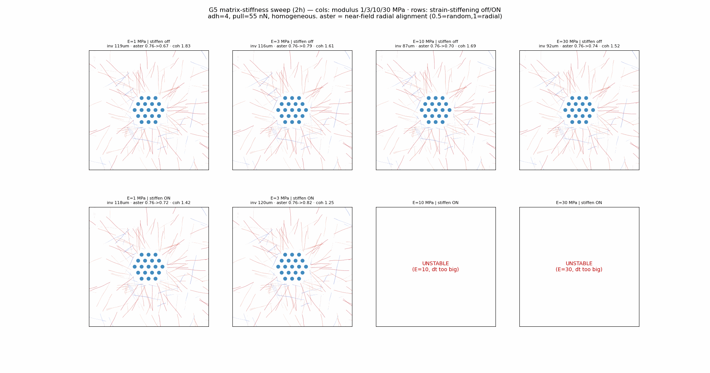

Invasion falls from about 25 µm to 4.7 µm. The clutch is the main driver of motion in this baseline.
Lazy-loaded Python result · rendered on canvas
Watch the organoid remodel and invade the collagen
Every frame is exact Python output replayed on the canvas; the browser runs no second solver. Fibres are coloured by their radial order (blue = tangential, red = radial). True geometry is 1×.
loading…
t = 0
tangential fibre
radial fibre
fixed cell (B)
moving cell (D)
Clutch drives motion; adhesion decides whether cells stay together
The current biological G5 baseline now inherits the molecular clutch from G4 instead of using a constant pull. Eight matched two-hour runs remove or add one mechanism at a time, so the storyline is causal rather than a collection of unrelated versions.



Invasion rises to 68 µm, but cohesion worsens from 1.02 to 1.91. Adhesion is the cohesion switch, not the motor.
Invasion falls to 7.7 µm. Connected collagen is needed to transmit the clutch pull.
Evidence boundary. These are seed-23, two-hour personal simulation tests, not experimentally validated findings. Stiffening and plasticity change invasion little in this particular clutch baseline; that does not replace the earlier matrix-alignment sweep, which measured a different outcome.
Separate scale, cell number, motility and adhesion
The G4→G5 audit found that several parameters had changed alongside cell number. The 0A–0C controls now freeze the G4 clutch physics, restore near-cell fibre coverage with a corona network, and finally compare released cells with adhesion off versus on.



Per-sector motor–clutch traction is consistent between G4 and the larger G5 domain.
Adding cells does not make each active clutch pull harder: 4.50, 4.46, 4.51 and 4.40 nN for M=1, 7, 13 and 19.
The clutch can move individual cells without adhesion; adhesion converts that motion into a cohesive multicellular front.
Interpretation boundary. These lineage controls identify what each added layer contributes. They support the internal model logic, but the 68 µm versus 25 µm separation still needs calibration against the organoid movies.
Adhesion moves G5 from cohesive to collective to single-cell escape
The current three-mode comparison keeps the molecular-clutch baseline fixed. Cohesive and collective cases differ only in cell–cell adhesion; the single-cell case combines weak adhesion with a sparse low-adhesion leader population.

About 22 µm invasion with cohesion 1.00: the pack stays tightly connected.
About 25 µm invasion with cohesion 1.02: cells advance together as a cohesive front.
About 78 µm invasion with cohesion 1.62: weakly attached cells escape much farther.
Important definition. “Stuck” is no longer produced by high adhesion alone. A genuinely low-motion condition requires weak traction or turning the clutch off, which gives about 4.7 µm movement in the ablation above.
Earlier leader-traction experiment and adhesion × constant-pull map
Before the molecular-clutch baseline was adopted, G5D v2/v3 varied prescribed pull and leader adhesion. Extra leader traction made one leader fast but did not pull a connected follower strand. These figures remain part of the evolution record, but they are not the current baseline.


Stiffening affects alignment more clearly than invasion
The earlier two-hour matrix sweep measured near-field aster order: at E=3 MPa, strain-stiffening gave the largest rise. The new clutch ablation measures invasion distance at fixed E and finds little change (24 µm with stiffening versus 25 µm baseline). These are different readouts, so both results remain visible.

Aster order falls from 0.76 to 0.67 without stiffening: cells disrupt rather than align the network.
Stiffening on raises aster order from 0.76 to 0.82 (Δ=+0.06) with cohesion 1.25.
Stiffening-on cases require a smaller time step before they can be interpreted physically.
Evidence boundary. The alignment sweep used adhesion 4 and prescribed pull 55 nN; the new invasion ablation uses the molecular clutch. Neither validates 3 MPa against a Kolade-lab material measurement.
What each stage adds
Lineage controls 0A–0C, staged build A → E, then ablation
One cell, G4-frozen parameters and matched fibre density test whether the single-cell physics survives the larger G5 domain.
Vary M=1–19 on a corona network; per-active-sector traction remains approximately independent of M.
Release cells with the molecular clutch on and adhesion off, then compare with matched adhesion-on G5.
N motor–clutch disks + a soft cell–cell adhesion potential pack into a cohesive, force-balanced organoid.
Fixed organoid; each surface cell reels nearby collagen inward. Near-field radial order rises.
The updated sweep finds the strongest aster rise at E=3 MPa with stiffening on; high-E stiffening runs need a smaller time step.
Homogeneous molecular-clutch cells with adhesion advance about 25 µm as a cohesive front over two hours.
Adhesion 60, 8 and 1 separates cohesive, collective and single-cell escape under a shared clutch baseline.
An archived constant-pull test asks whether high-traction leaders drag followers; the current result says not yet.
Bell crosslink rupture + re-weld changes topology, but adds little invasion in the current clutch baseline.
Eight matched runs isolate clutch, adhesion, crosslinks, stiffening, plasticity, leaders and high adhesion.
Grippable fibres are gated to be boundary-connected and seeded as long radial tracts, so the pull reaches the mid-field.
Implemented equations
What the model solves
ζ ṙi = Fstretch + Fbend + Fcrosslink + Frepulsion + Factive
Same bead–spring engine as G2; repulsion now sums over every cell disk.
Fcc(d): repel d<d₀, adhere d₀≤d<d₀+r
Soft adhesive disks (tissue surface tension); adhesion strength sets the invasion mode.
Fc = kcxc; koff = koff0 exp(Fc/Fb)
Each bound clutch loads as actin reels; force-dependent unbinding produces emergent traction rather than a prescribed constant pull.
kadhij = kadh min(si,sj); Fleader = αpullF
Low adhesion and high traction are separate switches applied to the same selected outer cells.
γc ṙc = −Σ Fcell→ECM + Fcc
Reeling collagen inward pulls the cell toward the matrix = outward invasion.
Sr = ⟨2(t̂·r̂)² − 1⟩
+1 radial (TACS-3-like aster), −1 tangential, 0 isotropic.
koff = koff0 exp(F/Fb)
Loaded welds rupture; fibres re-weld at their current crossings (topological remodelling).
Numba step · O(E) grid links · cached contacts
Full-scale organoid (43 cells, ~24k beads, 2400 steps) runs in ~8 s.
Evidence boundary. Own-simulation output is personal testing, not a confirmed finding.
G5-0A–0C establish scale transfer, cell-number independence and the role of adhesion. The current clutch
ablation identifies clutch, adhesion and crosslinks as the largest controls of invasion/cohesion in this run.
Stage-C alignment, earlier D v2/v3 leader tests and Stage-E topology changes remain exploratory personal results.
A clean load–unload κ is still confounded by slow large-scale relaxation. Collagen is deliberately softened
(3 MPa) as in G3/G4 so the pull visibly reorganises the
near field. Not modelled: SLS viscoelasticity, proteolysis, 3D pores/nucleus, deformable cell cortex.
Evidence boundary
References
- Saraswathibhatla et al. 2025 — swirling radially aligns collagen; radial-order + displacement-scaling targets.
- Su & Kim 2021 — radial vs circumferential fibre orientation changes spheroid invasion.
- Ilina & Friedl 2020 — cell–cell adhesion + matrix confinement set jamming / collective vs single-cell.
- Friedl & Gilmour 2009 · Cheung et al. 2013 · Kalluri & Weinberg 2009 · Aiello et al. 2018 — collective leaders and partial-EMT framing; reduced adhesion is only a coarse proxy.
- Nam et al. 2016 · Wisdom et al. 2018 — collagen plasticity (κ) and protease-independent migration.
- Lee et al. 2014, Abhilash/Shenoy 2014 — bead–spring fibrous networks and cell-driven reorganisation.